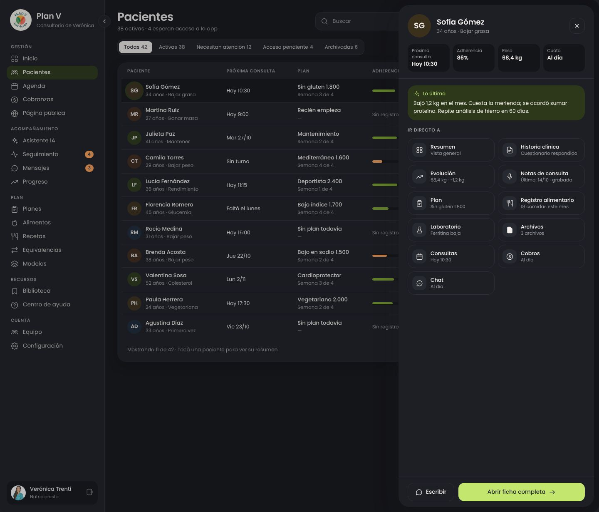
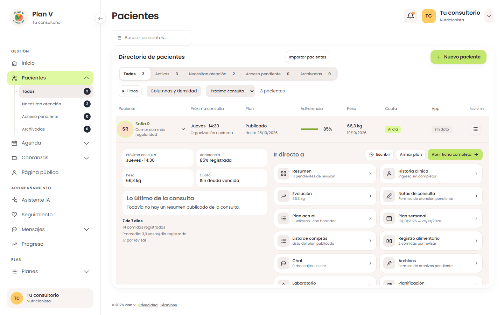
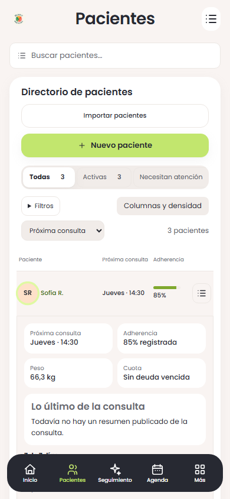

Pacientes · resumen en la misma fila
Parte 3 del rediseño. Tabla con filtros y orden, plan, peso, adherencia, cuota y acceso a la app. Al tocar una fila o pulsar Enter, se abre su resumen con accesos a las secciones de la ficha. Escape lo cierra y devuelve el foco.
Abrir Pacientes funcionando · Boceto navegable aprobado · Informe de verificación
Datos ficticios locales. La tabla consulta sólo metadata de plan y peso; el resumen se pide al abrir la fila. Conserva importación, alta, edición, invitación, archivo y restauración. Las acciones por paciente están en «Más opciones». No se envían mensajes ni se publican planes desde esta revisión.
Boceto aprobado · referencia de composición
Implementación · 1440 × 900
En el celular
Implementación · 390 × 844
Las cantidades y los datos cambian respecto del boceto. Se mantienen los 14 accesos actuales de Plan V. En escritorio, el resumen se desplaza dentro del contenido; en celular se apila. La demostración no acredita cuenta real, lector de pantalla ni teléfono físico.